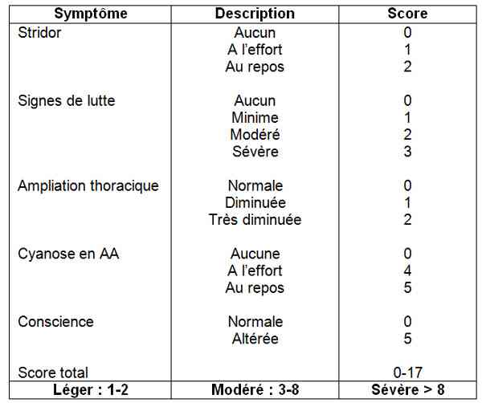
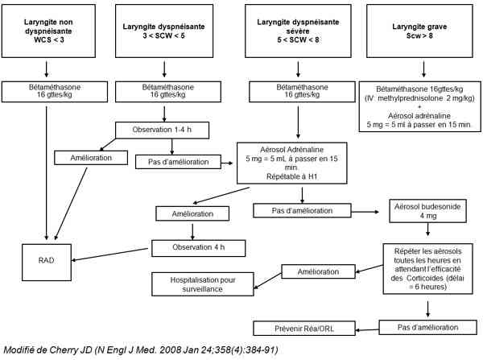

Bienvenue Sur Medical Education
Laryngite de l'enfant
EnfantSpécialité : orl / pédiatrie /
Points importants
-
La dyspnée laryngée de l’enfant doit être prise en charge rapidement et ses signes de gravité doivent être bien connus, car l’évolution peut être rapidement défavorable
-
Avant 6 mois, les causes principales sont le stridor congénital, l’angiome sous-glottique et les malformations
-
Après 6 mois, il s’agit le plus souvent de laryngites virales, dont le traitement est essentiellement basé sur les corticoïdes
-
Tableaux cliniques le plus souvent bénins avec < 1% formes graves et < 5% d’hospitalisation dont 1 à 3% d’intubation
Présentation clinique / CIMU
SIGNES FONCTIONNELS
Présentation clinique / CIMU
SIGNES FONCTIONNELS
Généraux
- Sueurs, HTA, tachycardie
- Hypoxie avec cyanose, d’apparition tardive et dans les formes sévères
Spécifiques
-
Laryngite congestive :
- toux (accès très brefs)
- voix rauque sans dyspnée continue
- apnées de quelques secondes
-
Laryngite sous glottique :
- la plus fréquente entre 1 et 3 ans
- inflammation aigue de la sous-glotte
- rhinopharyngite
- dyspnée laryngée
- fièvre modérée
CONTEXTE
Terrain
- Enfants de moins de 6 ans
- Pic de 7 à 36 mois
- Sex ratio (garçon/fille) : 1,5
Traitement usuel
- Aérosol d’adrénaline
- Corticoïdes
Antécédents
- Aucun habituellement
Facteurs de risque
- Reflux gastro-œsophagien (surtout en présence de laryngomalacie)
- Prématurité
- Inhalation de substances irritatives
Circonstances de survenue
- Contexte infectieux
- Exclure ingestion de corps étranger
- Apparition nocturne (laryngite sous-glottique)
EXAMEN CLINIQUE
- Age (gravité si < 6 mois)
- Présence de signes d’hypercapnie (sueurs, pâleur)
- Présence de signes d’hypoxie (cyanose)
- Signes de lutte
- Cornage
- Tirage
- Examen pneumologique et cardiovasculaire approfondi
 _850 Tableau Score clinique de la laryngite de l'enfant
EXAMENS PARACLINIQUES SIMPLES
- SpO2, ECG
CIMU
- Tri 1 : laryngite sous-glottique sévère
- Tri 3 : laryngite congestive
Signes paracliniques
BIOLOGIQUES
-
Bilan infectieux (NFS, CRP) non utile, sauf pour exclure une pathologie bactérienne qui est suspectée en cas de fièvre élevée et mal tolérée, associée à une altération de l’état général
Diagnostic étiologique
-
Infection virale :
-
virus influenza A et B, para-influenza, adénovirus, coronavirus, rhinovirus (présence de fièvre et contage familial)
-
Infection bactérienne :
-
streptocoque ß-hémolytique, Hæmophilus influenzæ ou pneumocoque (fièvre élevée, altération de l’état général)
-
Inhalation de substances irritatives (tabac, fumée, oxyde de carbone), de caustiques chimiques,corps étrangers, traumatismes (anamnèse fondamentale)
Diagnostic différentiel
EN REGLE GENERALE
Diagnostic étiologique
-
Infection virale :
- virus influenza A et B, para-influenza, adénovirus, coronavirus, rhinovirus (présence de fièvre et contage familial)
-
Infection bactérienne :
- streptocoque ß-hémolytique, Hæmophilus influenzæ ou pneumocoque (fièvre élevée, altération de l’état général)
- Inhalation de substances irritatives (tabac, fumée, oxyde de carbone), de caustiques chimiques,corps étrangers, traumatismes (anamnèse fondamentale)
Diagnostic différentiel
EN REGLE GENERALE
< 6 mois
- Reflux gastro-œsophagien
- Laryngomalacie
- Paralysie laryngée (trauma obstétrical)
- Malformation congénitale (sténose, palmure)
- Kyste congénital du larynx
- Angiome sous-glottique +++
- Autres causes : sténose sous-glottique, palmure, kyste vestibule laryngé
> 6 mois
- Corps étrangers laryngés
- Brûlures accidentelles du larynx
- Oedèmes laryngés allergiques (signes sévères, anaphylaxie)
- Oedème angio-neurotique héréditaire
- Traumatismes laryngés externes
- Traumatismes laryngés internes (iatrogènes)
- Papillomatose laryngée
Traitement
TRAITEMENT PREHOSPITALIER / INTRAHOSPITALIER
Stabilisation initiale
-
Laryngite sous-glottique :
-
si la dyspnée est menaçante :
- 1 aérosol d’adrénaline : 5 mg = 5 mL à passer en 15 min ou budésonide (0,5 µg) : 1 ampoule à passer en 15 min
- associée à corticoïdes : méthylprednisolone 2 mg/kg IVL ou bétaméthasone per os (16 gouttes/kg) ou prednisolone 2mg/kg per os
-
si la dyspnée est menaçante :
-
Laryngite congestive :
- corticoïdes per os : bétaméthasone per os (16 gouttes/kg) ou prednisolone 2mg/kg per os
Suivi du traitement
-
En présence de signes de gravité ou en cas de non amélioration ou de réapparition des symptômes :
- prévenir les ORL et, si sévère, les réanimateurs
- hospitalisation, voie veineuse, surveillance
- répéter les aérosols d’adrénaline toutes les heures en attendant l’efficacité des corticoïdes (délai = 6 heures)
MEDICAMENTS
IV
- Methylprednisolone (Solumédrol, lyophilisat et solution pour usage parentéral à 20 mg/2 mL, 40 mg/2 mL et 120 mg/2 mL) : 2 mg/kg IVL
PO
- Bétaméthasone (Célestène, solution buvable à 0,05 % : 1 mL de solution correspond à 0,5 mg de bétaméthasone) : 16 gouttes/kg
- Prednisolone (Solupred, comprimé effervescent à 5 mg, 20 mg et comprimé orodispersible à 5 mg) : 2mg/kg PO
Aérosols
- Adrénaline (5 mL = 5 mg) : 1 ampoule en 15 min
- Budésonide (suspension pour inhalation 0,5mg/2mL): 1 ampoule en 15 min
Surveillance
CLINIQUE
-
Signes de lutte
-
Alimentation
-
FC, FR, SpO2, PA, T°/h et ensuite toutes les 3 h
Devenir / orientation
CRITERES D’ADMISSION
-
Signes d’hypoventilation alvéolaire : hypercapnie (sueurs, HTA, tachycardie), hypoxie (cyanose)
-
Troubles du rythme respiratoire (bradypnée, pauses, apnées)
-
Signes d’épuisement : tachypnée superficielle, disparition du tirage (enfant)
-
Durée : si > 1 h = gravité potentielle
CRITERES DE SORTIE
-
Enfant eupnéique
-
Capable de s’alimenter normalement
-
Apyrétique
ORDONNANCE DE SORTIE
-
En l’absence de récidive des signes de laryngite 2-3 heures après l’épisode aigu de laryngite sous-glottique, ou si laryngite congestive chez un enfant > 6 mois : retour à domicile avec ordonnance de corticoïdes PO 16 gouttes/kg/j pendant 3 jours
-
Associer un traitement antipyrétique pour la fièvre
-
Avant l’âge de 6 mois, même en cas d’amélioration sous traitement, il est souhaitable de demander un avis ORL en vue d’une endoscopie diagnostique
RECOMMANDATIONS DE SORTIE
-
Reconsulter le médecin traitant ou, le cas échéant, aux Urgences si nouvel épisode
Mécanisme / description
-
La laryngite est une inflammation aiguë du larynx d’origine infectieuse survenant le plus souvent au cours des infections épidémiques virales des voies aériennes supérieures pendant l'hiver ou au début du printemps
-
Le larynx du nourrisson est particulier par rapport à celui de l’adulte : la sous-glotte est de petite taille (6 mm de diamètre à la naissance) et elle est limitée par un anneau cartilagineux inextensible, le cartilage cricoïde. Elle est en outre recouverte par un tissu conjonctif lâche, particulièrement sensible à l'inflammation
-
Dans ce contexte, toute agression, même modérée, entraîne une importante augmentation des résistances des voies aériennes et une dyspnée inspiratoire
Algorithme
Devenir / orientation
CRITERES D’ADMISSION
- Signes d’hypoventilation alvéolaire : hypercapnie (sueurs, HTA, tachycardie), hypoxie (cyanose)
- Troubles du rythme respiratoire (bradypnée, pauses, apnées)
- Signes d’épuisement : tachypnée superficielle, disparition du tirage (enfant)
- Durée : si > 1 h = gravité potentielle
CRITERES DE SORTIE
- Enfant eupnéique
- Capable de s’alimenter normalement
- Apyrétique
ORDONNANCE DE SORTIE
- En l’absence de récidive des signes de laryngite 2-3 heures après l’épisode aigu de laryngite sous-glottique, ou si laryngite congestive chez un enfant > 6 mois : retour à domicile avec ordonnance de corticoïdes PO 16 gouttes/kg/j pendant 3 jours
- Associer un traitement antipyrétique pour la fièvre
- Avant l’âge de 6 mois, même en cas d’amélioration sous traitement, il est souhaitable de demander un avis ORL en vue d’une endoscopie diagnostique
RECOMMANDATIONS DE SORTIE
- Reconsulter le médecin traitant ou, le cas échéant, aux Urgences si nouvel épisode
Mécanisme / description
-
La laryngite est une inflammation aiguë du larynx d’origine infectieuse survenant le plus souvent au cours des infections épidémiques virales des voies aériennes supérieures pendant l'hiver ou au début du printemps
-
Le larynx du nourrisson est particulier par rapport à celui de l’adulte : la sous-glotte est de petite taille (6 mm de diamètre à la naissance) et elle est limitée par un anneau cartilagineux inextensible, le cartilage cricoïde. Elle est en outre recouverte par un tissu conjonctif lâche, particulièrement sensible à l'inflammation
-
Dans ce contexte, toute agression, même modérée, entraîne une importante augmentation des résistances des voies aériennes et une dyspnée inspiratoire
Algorithme
Algorithme
 _851 Algorithme Algorithme : laryngite de l'enfant
Bibliographie
-
Bourchier D. Humidification in viral croup: a controlled trial. Aust Paediatr J 1984;20:289–91.
-
Johnson D. Croup. Clinical Evidence 2004;12:401–26.
-
Kelley PB. Racemic epinephrine use in croup and disposition. Am J Emerg Med 1992;10:181–3.
-
Neto GM. A randomized controlled trial of mist in the acute treatment of moderate croup. Academic Emerg Med 2002;9:873–9.
-
Prendergast M, Jones JS, Hartman D. Racemic epinephrine in the treatment of laryngotracheitis: can we identify children for outpatient therapy? Am J Emerg Med 1994;12:613–6.
-
Rizos JD, DiGravio BE, Sehl MJ, Tallon JM. The disposition of children with croup treated with racemic epinephrine and dexamethasone in the emergency department. J Emerg Med 1998;16:535–9.
-
Russell K. Cochrane Acute Respiratory Infections Group. Glucocorticoids for croup. Cochrane Database Syst Rev 2006.
Auteur(s) : Luigi TITOMANLIO, Gwladys BARTHOD, Irène D'AGOSTINO